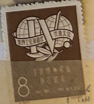
| SOURCE | TITLE| IMAGE MATCH | click to source page |
| eBay | P.R. CHINA 317 - International Trade Union Congress (pa58178) | eBay | 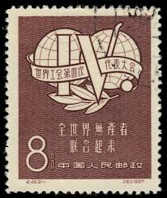 |
| eBay | Russia Scott 1333 (1949) Cancelled To Order F-VF, CV $10.00 W | eBay | 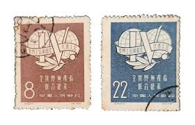 |
| Free stamp catalogue | Stamps from China People's Republic - Freestampcatalogue.com - The free online stampcatalogue with over 500.000 stamps listed. | 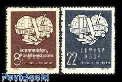 |
| eBay UK | CHINA 1957 4th World Trade Union Congress. Set of 2. USED/CTO. SG1540/1541. | eBay UK | 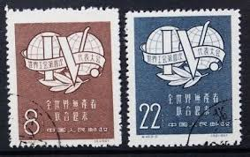 |
| Xabusiness.com | 1957 China Stamps | 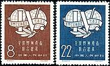 |
| PicClick | China Chinese Stamps FOR SALE! - PicClick | 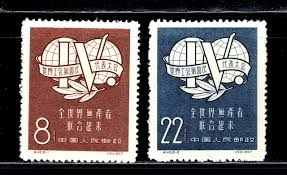 |
| eBay | CHINA PRC # 317-318 USED TRADE UNION CONGRESS EMBLEM Complete Set of 2 | eBay | 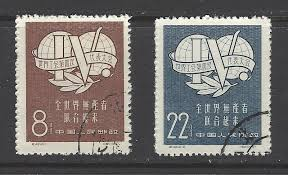 |
| DT Stamps | C42 4th Congress of World Trade Union_C-Headed issues_Peoples Republic of_Stamps of China_联系方式-联系我们果博东方有限公司客服电话181-08888862(公司直属) | 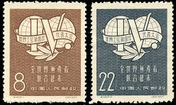 |
| eBay | CHINA PRC - 1957 - Sc #317 - 318 - USED | eBay | 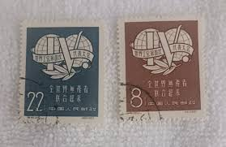 |
| eBay | Cancelled to Order/CTO Black Chinese Stamps for sale | eBay | 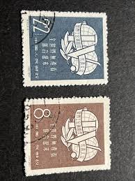 |
| eBay | Cancelled to Order/CTO Art, Artists Chinese Stamps for sale | eBay | 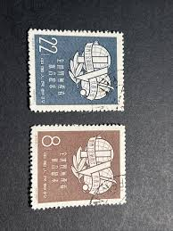 |
| eBay | CHINESE FAMINE RELIEF CINDERELLA 50 CENT BLUE BUTTERFLY 1924 SERIES | eBay | 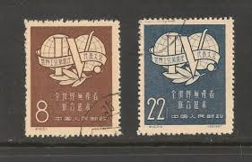 |
| eBay | China Stamp Lot C42 S14 | eBay | 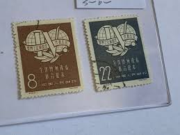 |
| Lazada Malaysia | Buy Stamp 1957 Online at a Better Price | Lazada Malaysia | 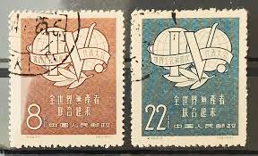 |
| Etsy | FREE Shipping,vintage Republic of China , ROC Stamp ,issued 1948,color Claret, - Etsy | 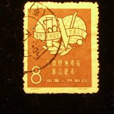 |
| eBay | R8101 China 1957 Trade Union Congress 2v. used | eBay | 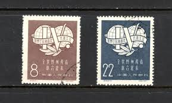 |
| Xabusiness.com | 1981 China Stamps | 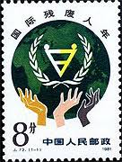 |
| Linns Stamp News | Modern and classic Chinese rarities claimed in successful New Year auctions | 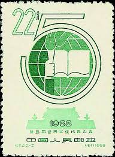 |
| eBay | China Sc 349-50, C49, Cancelled, fresh color, Very Fine | eBay | 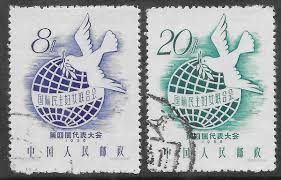 |
| eBay | China stamps S-318 C_42 4th Congress of WTU 1957 8,22FEN VF 2pcs set | eBay | 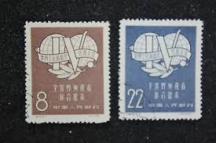 |
| Everyday Life in Mao's China | Commemorative stamp for the Fourth Meeting in the Women's International Democratic Federation in 1958 – Everyday Life in Mao's China | 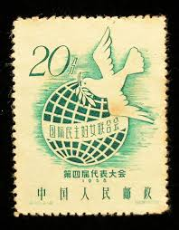 |
| Mystic Stamp | 1748 - 1981 China, People's Republic of - Mystic Stamp Company | 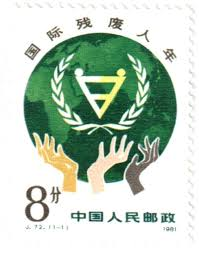 |
| eBay | Cancelled to Order/CTO Asian Stamps for sale | eBay | 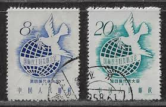 |
| Xabusiness.com | C49 Scott 349-350 4th Congress of International Democratic Women's Federation - China Stamps | 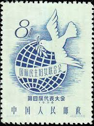 |
| HipStamp | China 1958 Sc#370-1 5th International Congress of Student'S Union -Cto-Vf | Asia - China, General Issue Stamp / HipStamp | 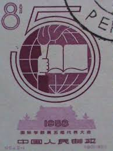 |
| eBay | CHINA PRC 1957 C42 WORLD TRADE COUNCIL (Scott 317-18) VF MNH | eBay | 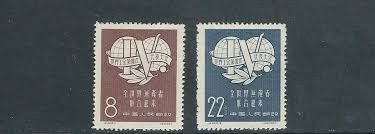 |
| Xabusiness.com | 1958 China Stamps | 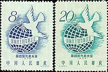 |
| eBay | China 1958 C54. 5th Congress of International union of students. Sc #371. Used. | eBay | 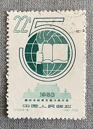 |
| PicClick | CHINA PRC 1958 4th Women's Congress Stamps – Dove & Globe – 8f + 20f Used Pair $5.99 - PicClick | 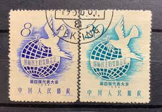 |
| eBay UK | China stamps S-318 C_42 4th Congress of WTU 1957 8,22FEN VF 2pcs set | eBay UK | 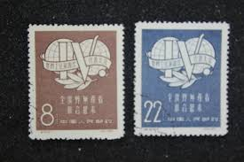 |
| eBay | AOP) China PRC #349-50 cto used. 1958 Democratic Women's Congress, Vienna | eBay | 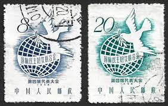 |
| eBay | PRC China, 1981, sc#1748, Mint, NH, OG | eBay | 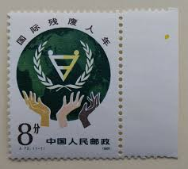 |
| chinesestamp.org | 1996-27, The 47th Annual Congress of International Astronautical Federation《国际宇航大会第四十七届年会》 - Chinese Postage Stamps | China Postage Stamps | Chinese Stamp Album | China Philatel | ACPF | Stamps Catalogue of PRC | | 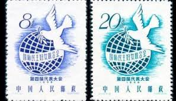 |
| Carousell | 2套中国邮票各售：纪36，纪49, Hobbies & Toys, Memorabilia & Collectibles, Stamps & Prints on Carousell | 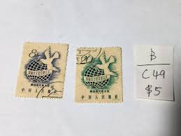 |
| eBay | China VR Michelnummer 346 gestempelt (europa:15796) | eBay | 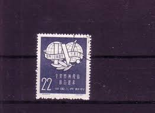 |
| Blogger.com | Stamp Art: Liu Shuoren | 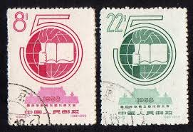 |
| Shutterstock | Beijing Stamp: Over 1,851 Royalty-Free Licensable Stock Photos | Shutterstock | 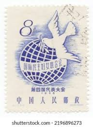 |
| eBay | CHINA PRC Sc#1748 1981 J72 International Year of Disabled MNH | eBay | 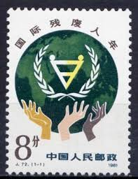 |
| Shutterstock | Dove With Envelope: Over 1,098 Royalty-Free Licensable Stock Photos | Shutterstock | 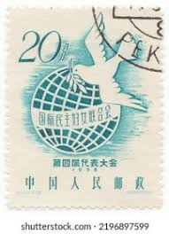 |
| eBay | China Stamps -中国邮票-国际残疾人年- 1981, J72, Scott 1748 , MNH, F-VF | eBay | 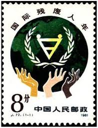 |
| Carousell | 戳戳For Sale | Memorabilia & Collectibles | Carousell Singapore | 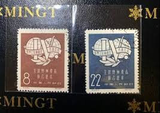 |
| PicClick | MAYFAIRSTAMPS CHINA 1978 Pair stamp Anniversary Taichung Taiwan to Fairbanks AK $1.00 - PicClick | 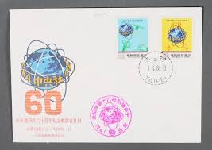 |
| eBay | China C42 4th Congress of World Trade Union Set of 2v - Used (SL197) | eBay |  |
| 中華郵政全球資訊網 | The Postal Universal Website of R.O.C ─ Stamp House - Pages | 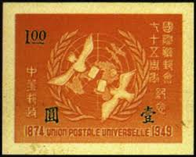 |
| Manchukuo Stamps | The Commemorative Cancellations and Postmarks of Manchukuo - 1932 to 1935 | 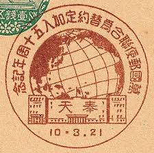 |
| China stamp | J40 Scott 1511 National Scientific and Technological Exhibition of Juniors' Works - China Stamps | 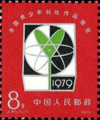 |
| eBay | Aitutaki 1983 Communications,Carrier-Pigeon,Letter,Globe,Satellite Dish,MNH | eBay | 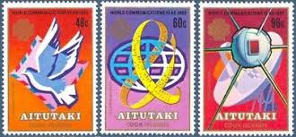 |
| eBay | China PRC J40 1979 Science and Technical Exhibition of Juniors Single Set | eBay | 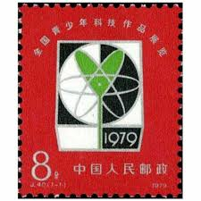 |
| eBay | PR CHINA 1981 J72 Stamp International Year for Disabled Persons BLK4国际残疾人年 | eBay | 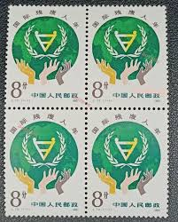 |
| eBay | FIRST DAY COVER JAPAN B2070 THE 24TH PTTI WORLD CONGRESS | eBay | 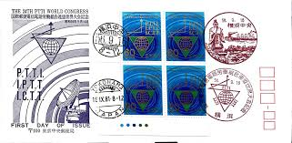 |
| eBay | PRC China Stamps:1957 International Democratic Women's Federation. Used (2) | eBay | |
| eBay | CHINA - USED STAMP -4th Congress of int'l Democratic Women's Federation - 1958. | eBay | |
| eBay | Aitutaki 1983 year, mint stamps MNH (**) - birds | eBay | |
| eBay | PRC China Stamps: 1979 Literary & Arts Workers, SC 1525-6 (2), Mint NH | eBay | |
| eBay | PRC China, 1979, sc#1511, Mint, NH,OG | eBay | |
| eBay UK | Dogs Stamps for sale | eBay UK | |
| Etsy | Lot of 2 Vintage Japanese Stamps, First Day Cover, 1955 and 1958 - Etsy Canada | |
| Etsy | Lot of 2 Vintage Japanese Stamps, First Day Cover, 1955 and 1958 - Etsy | |
| eBay | PR CHINA 1981 J72 Stamp International Year for Disabled Persons 1Pcs国际残疾人年 | eBay |